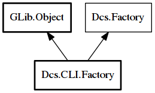

Factory
Object Hierarchy:

Description:
public class Factory :
Object,
Factory
Content:
Static methods:
Creation methods:
Methods:
- public TreeMap<string,Object> make_object_map (unowned Node* node)
Constructs the object tree using the top level object types, which for
the time being are only pages.
- public Object make_object (Type type) throws Error
Constructs an object of the type provided using the default build
settings for that class and returns the result.
- public Object make_object_from_node (unowned Node* node) throws Error
Constructs an object using the XML node provided and returns the
result.
Inherited Members:
All known members inherited from class GLib.Object
- @new
- newv
- new_valist
- get_type
- get_class
- @ref
- unref
- ref_sink
- weak_ref
- weak_unref
- add_weak_pointer
- remove_weak_pointer
- @get
- @set
- get_property
- set_property
- get_data
- set_data
- set_data_full
- steal_data
- get_qdata
- set_qdata
- set_qdata_full
- steal_qdata
- freeze_notify
- thaw_notify
- dispose
- constructed
- notify_property
- connect
- disconnect
- add_toggle_ref
- remove_toggle_ref
- bind_property
- notify
- ref_count
All known members inherited from interface Dcs.Factory